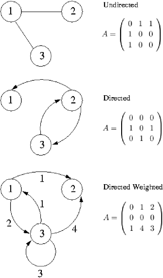
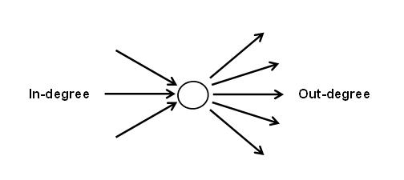

(এটা একটা পরীক্ষামূলক লেখা। মূল সিরিজের লেখা পড়তে ক্লিক করো এখানে)
তুমি কি জানো পৃথিবীর প্রায় সব রকমের প্রবলেমকে কিছু রাস্তা আর শহরের প্রবলেম বানিয়ে সলভ করে ফেলা যায়? গ্রাফ থিওরির যখন জন্ম হয় তখন তোমার আমার কারোই জন্ম হয়নি, এমনকি পৃথিবীতে কোন কম্পিউটারও ছিলোনা! সেই সতেরো দশকের শেষের দিকে লিওনার্দ অয়লার গ্রাফ থিওরি আবিষ্কার করেন কনিসবার্গের সাতটি ব্রিজের সমস্যার সমাধান করতে। তখনই সবার কাছে পরিস্কার হয়ে যায় যে যেকোন প্রবলেমকে শহর-রাস্তার প্রবলেম দিয়ে মডেলিং করে চেনা একটা প্রবলেম বানিয়ে ফেলতে গ্রাফ অ্যালগোরিদমের জুড়ি নেই। আর যখনই তুমি একটা প্রবলেমকে চেনা কোন প্রবলেমে কনভার্ট করে ফেলতে পারবে তখন সেটা সমাধান করা অনেক সহজ হয়ে যাবে।
গ্রাফ অ্যালগোরিদমের অনেক ব্যাবহার বাস্তবে আছে। যেমন:
- সবথেকে কমন হলো সংক্ষিপ্ততম পথ খুজে বের করা। সেই পথ হতে পারে একটা শহর থেকে আরেক শহরে অথবা এক এয়ারপোর্ট থেকে আরেক এয়ারপোর্টে। তুমি হয়তো জানো সার্ভার থেকে একটা ওয়েবপেজ তোমার পিসিতে পৌছাতে অনেকগুলো রাউটার পার করে আসতে হয়, গ্রাফ থিওরি দিয়ে এক রাউটার থেকে আরেকটাতে যাবার পথ খুজে বের করা হয়। গুগল ম্যাপ গ্রাফ থিওরী ব্যবহার করে তোমাকে পথ দেখায়।
- যুদ্ধের সময় একটা দেশের কোন কোন রাস্তা বোমা দিয়ে উড়িয়ে দিলে দেশের রাজধানী সব শহর থেকে বিচ্ছিন্ন হয়ে যাবে সেটাও বের করে ফেলা যায় গ্রাফ থিওরি দিয়ে।
- তুমি শহরে নতুন কিছু ফ্লাইওভার বানাতে চাও। কোথায় ফ্লাইওভার বানালে বেশি কার্যকর হবে, কোন অংশে ট্রাফিক জ্যামের উপর কিভাবে প্রভাব পড়বে এসবই গ্রাফ থিওরি ব্যবহার করে তোমাকে জেনে নিতে হবে।
এরকম আরো অনেক ব্যবহার আমরা দেখব গ্রাফ অ্যালগোরিদমের বিভিন্ন অ্যাপ্লিকেশন দেখার সময়। এই অধ্যায়টা কয়েকটা ভাগে ভাগ করা হয়েছে:
- প্রথম ভাগে আমরা কিছু সংজ্ঞা শিখব যেগুলো না জানলেই নয়। তুমি যদি গ্রাফ থিওরি নিয়ে কিছুটা জানো তাহলে তুমি এ অংশ বাদ দিয়ে যেতে পার।
- দ্বিতীয়ে ভাগে আমরা শিখব কিভাবে প্রোগ্রামিং ল্যাংগুয়েজ ব্যবহার করে একটা গ্রাফ কম্পিউটারে সংরক্ষণ করা যায়।
- ৩য় ভাগে আসতে আসতে আমরা অ্যালগোরিদম শেখার জন্য প্রস্তুত। এবার আমরা বিভিন্ন গ্রাফ অ্যালগোরিদম শিখবো এবং সম্পর্কিত কিছু প্রবলেম সলভ করব।
গ্রাফ অ্যালগোরিদম নিয়ে জানার আগে খুব বেশি জিনিস আগে জানার দরকার নেই। কোগুলো আমি সি++ এর স্ট্যান্ডার্ড টেমপ্লেট লাইব্রেরি ব্যবহার করে লিখব। তুমি যদি ভেক্টর, কিউ, প্রায়োরিটি কিউ ইত্যাদি সম্পর্কে জানো তাহলে কাজ সহজ হয়ে যাবে। তুমি জাভা, পাইথন
বা অন্য ভাষা জানলে সেখানকার লাইব্রেরি ব্যবহার করতে পার।
প্রথম ভাগ: সংজ্ঞা
গ্রাফ কি?
ধরা যাক ৬টি শহরকে আমরা ১,২,৩,৪,৫,৬ দিয়ে চিহ্নিত করলাম। এবার যে শহর থেকে যে শহরে সরাসরি রাস্তা আছে তাদের মধ্যে লাইন টেনে দিলাম:

এটা খুবই সাধারণ একটা গ্রাফ যেখানে কিছু শহরের মধ্যের রাস্তাগুলো দেখানো হয়েছে। গ্রাফ থিওরির ভাষায় শহরগুলোকে বলা হয় নোড(Node) বা ভারটেক্স(Vertex) আর রাস্তাগুলোকে বলা হয় এজ(Edge)। গ্রাফ হলো কিছু নোড আর কিছু এজ এর একটা কালেকশন।
নোড হলো একটা অবজেক্ট যেটা দিয়ে গ্রাফে অনেককিছু বুঝাতে পারে, কোন গ্রাফে হয়তো নোড দিয়ে শহর বুঝায়, কোন গ্রাফে এয়ারপোর্ট, কোন গ্রাফে আবার হয়তো দাবার বোর্ডের একটা ঘর বুঝাতে পারে! আর এজ দিয়ে বুঝায় নোডগুলোর মধ্যের সম্পর্ক। কোন গ্রাফে এজ দিয়ে দুটি শহরের দূরত্ব বুঝাতে পারে, কোন গ্রাফে এক এয়ারপোর্ট থেকে আরেক এয়ারপোর্টে যাবার সময় বুঝাতে পারে, আবার দাবার বোর্ডে একটা ঘরে ঘোড়া থাকলে সেই ঘর থেকে কোন ঘরে যাওয়া যায় সেটাও বুঝাতে পারে।
নিচের ছবিতে দাবার বোর্ডটাও একটা গ্রাফ। প্রতিটা ঘর একটা করে নোড। যে ঘরে ঘোড়া আছে সেখান থেকে এজগুলো দেখানো হয়েছে:

এককথায় নোডের কাজ কোন একধরণের অবজেক্টকে রিপ্রেজেন্ট করা আর এজ এর কাজ হলো দুটি অবজেক্টের মধ্যে সম্পর্কটা দেখানো।
অ্যাডজেসেন্ট নোড:
A নোড থেকে B নোডে একটা এজ থাকলে B কে বলা হয় A এর অ্যাডজেসেন্ট নোড। সোজা কথায় অ্যাডজেসেন্ট নোড হলো এজ দিয়ে সরাসরি কানেক্টেড নোড। একটা নোডের অনেকগুলো অ্যাডজেসেন্ট নোড থাকতে পারে।
ডিরেক্টেড গ্রাফ আর আনডিরেক্টেড গ্রাফ:
ডিরেক্টেড গ্রাফে এজগুলোতে তীরচিহ্ন থাকে, তারমানে এজগুলো হলো একমুখি(Unidirectional), আনডিরেক্টেড গ্রাফে এজগুলো দ্বিমুখী(Bidirectional)। নিচের ছবি দেখলেই পরিষ্কার হবে:
{kind=link}
বামের ছবির গ্রাফ ডিরেক্টেড, ডানেরটা আনডিরেক্টেড।
ওয়েটেড আর আনওয়েটেড গ্রাফ:
অনেক সময় গ্রাফে এজগুলোর পাশে ছোট করে ওয়েট(Weight) বা কস্ট(Cost) লেখা থাকতে পারে:
{kind=link}
এই ওয়েট বা কস্ট দিয়ে অনেককিছু বুঝাতে পারে, যেমন দুটি শহরের দূরত্ব কত কিলোমিটার, অথবা রাস্তাটি দিয়ে যেতে কত সময় লাগে, অথবা রাস্তা দিয়ে কয়টা গাড়ি একসাথে যেতে পারে ইত্যাদি। আগের গ্রাফগুলো ছিলো আনওয়েটেড, সেক্ষেত্রে আমরা ধরে নেই সবগুলো এজের ওয়েটের মান এক(১)। সবগুলো ওয়েট ১ হলে আলাদা করে লেখা দরকার হয়না।
পাথ:
পাথ(Path) হলো যে এজগুলো ধরে একটা নোড থেকে আরেকটা নোডে যাওয়া যায়। অর্থাৎ এজের একটা সিকোয়েন্স।

এক নোড থেকে আরেক নোডে যাবার অনেকগুলো পাথ থাকতে পারে। ছবিতে A থেকে D তে যাবার দুইটা পাথ আছে। A->B,B->C,C->D হলো একটা পাথ, এই পাথের মোট ওয়েট হলো ৩+৪+২=৯। আবার A->D ও একটা পাথ হতে পারে যেই পাথের মোট কস্ট ১০। যে পাথের কস্ট সবথেকে কম সেটাকে শর্টেস্ট পাথ বলে।
ডিগ্রী:
ডিরেক্টেড গ্রাফে একটা নোডে কয়টা এজ প্রবেশ করেছে তাকে ইনডিগ্রী, আর কোন নোড থেকে কয়টা এজ বের হয়েছে তাকে আউটডিগ্রী বলে। ছবিতে প্রতিটা নোডের ইনডিগ্রী আর আউটডিগ্রী দেখানো হয়েছে:
{kind=link}
আনডিরেক্টেড গ্রাফে ইন বা আউটডিগ্রী আলাদা করা হয়না। একটা নোডের যতগুলো অ্যাডজেসেন্ট নোড আছে সেই সংখ্যাটাই নোডটার ডিগ্রী।

হ্যান্ডশেকিং লেমা একটা জিনিস আছে যেটা বলে একটা বিজোড় ডিগ্রীর নোডের সংখ্যা সবসময় জোড় হয়। উপরের গ্রাফে A আর C এর ডিগ্রী ৩, এরা বিজোড় ডিগ্রীর নোড। তাহলে বিজোড় ডিগ্রীর নোড আছে ২টা, ২ হলো একটা জোড় সংখ্যা। হ্যান্ডশেক করতে সবসময় ২টা হাত লাগে, ঠিক সেরকম একটা এজ সবসময় ২টা নোডকে যোগ করে। তুমি একটু চিন্তা করে দেখো:
২টা জোড় ডিগ্রীর নোডকে এজ দিয়ে যোগ করলে ২টা নতুন বিজোড় ডিগ্রীর নোড তৈরি হয়।
২টা বিজোড় ডিগ্রীর নোডকে এজ দিয়ে যোগ করলে ২টা বিজোড় ডিগ্রীর নোড কমে যায়।
১টা জোড় আর একটা বিজোড় ডিগ্রীর নোড যোগ করলে মোট বিজোড় ডিগ্রীর নোড সমান থাকে(এক পাশে কমে, আরেক পাশে বাড়ে)।
তাহলে দেখা যাচ্ছে হয় ২টা করে বাড়তেসে বা ২টা করে কমতেসে বা সমান থাকছে, তাই বিজোর ডিগ্রীর নোডের সংখ্যা সবসময় জোড়।
একইভাবে এটাও দেখানো যায় একটা গ্রাফের ডিগ্রীগুলোর যোগফল হবে এজসংখ্যার দ্বিগুণ। উপরের গ্রাফে ডিগ্রীগুলোর যোগফল ১০, আর এজসংখ্যা ৫।
২য় অংশ: গ্রাফ রিপ্রেজেন্টেশন
আমরা এখন শিখব কিভাবে গ্রাফ ইনপুট নিয়ে ভ্যারিয়েবলে সেভ করে রাখতে হয়। অনেকগুলো পদ্ধতি আছে, ২টি পদ্ধতি বেশি সুবিধাজনক, এগুলো হলো:
- অ্যাডজেসেন্সি ম্যাট্রিক্স
- অ্যাডজেসেন্সি লিস্ট
অ্যাডজেসেন্সি ম্যাট্রিক্স:
গ্রাফে অ্যাডজেসেন্ট নোড কাকে বলে সেটা আমরা শিখে এসেছি। অ্যাডজেসেন্সি ম্যাট্রিক্সের ধারণাটা খুব সহজ, আমরা একটা ২ডি অ্যারে বা ম্যাট্রিক্স নিব, এরপর দুটি নোড i,j এর মধ্যে যদি এজ থাকে তাহলে অ্যারের সেই অবস্থানে ১ বসিয়ে দিব। নিচের ছবিটা দেখ:
এজগুলা ওয়েটেড হতে পারে, যেমন ঢাকা থেকে চট্টগ্রামে একটা এজ দিয়ে বলে দিতে পারে শহর দুটির দূরত্ব ৩০০ কিলোমিটার। তাহলে তোমাকে ম্যাট্রিক্সে ওয়েটও বসাতে হবে।
{kind=link}
উপরের গ্রাফটি বাইডিরেকশনাল বা আনডিরেক্টেড, অর্থাৎ ১ থেকে ২ এ যাওয়া গেলে ২ থেকে ১ এও যাওয়া যাবে। যদি গ্রাফটি ডিরেক্টেড হতো তাহলে এজগুলোর মধ্যে তীরচিহ্ন থাকতো। তখনো আমরা আগের মতো করেই ম্যাট্রিক্সে স্টোর করতে পারবো। নিচের ছবিতে সুন্দর করে সবগুলো কেস দেখানো হয়েছে:

একটা ব্যাপার লক্ষ করো, গ্রাফ আনডিরেক্টেড হলে ম্যাট্রিক্সটি সিমেট্রিক হয়ে যায়, অর্থাৎ mat[i][j]=mat[j][i] হয়ে যায়।
এক্সারসাইজ ১.১:
- ক) কল্পনা কর একটি গ্রাফ যার ৩টি নোড আছে edge সংখ্যা ৩,এবং সবগুলো edge bidirectional । edge গুলো হলো ১-২(cost ৫),২-৩(cost ৮),১-৩(cost ৩)। এটার adjacency matrix টা কেমন হবে?
- খ) প্রোগ্রামিং এক্সারসাইজ: তোমাকে একটা ডিরেক্টেড গ্রাফ ইনপুট দেয়া হবে। প্রথম লাইনে থাকবে নোড সংখ্যা N এবং এজ সংখ্যা E। তারপর E টা লাইন থাকবে, প্রতি লাইনে এজগুলো দেয়া থাকবে “নোড-১ নোড-২ কস্ট” ফরমেটে। আউটপুট হবে গ্রাফটার অ্যাডজেসেন্সি ম্যাট্রিক্স।
অ্যাডজেসেন্সি ম্যাট্রিক্স ব্যবহার করার সমস্যা:
অ্যাডজেসেন্সি ম্যাট্রিক্স ব্যবহারের অসুবিধা জানতে আমরা ছোট একটা এক্সারসাইজ করব।
এক্সারসাইজ ১.২:
- ক) তোমার ১০০ টা নোডের একটা গ্রাফ আছে। একটা ২ডি ইন্টিজার অ্যারে ব্যবহার করে তুমি অ্যাডজেসেন্সি ম্যাট্রিক্স তৈরি করেছ। এই ম্যাট্রিক্সটা মেমরিতে কত মেগাবাইট জায়গা নিবে?
- খ) নোডের সংখ্যা N হলে কত মেগাবাইট জায়গা লাগবে?
- গ) গ্রাফের এজ সংখ্যা অল্প-বেশি হলে কি ম্যাট্রিক্সটা মেমরিতে অল্প-বেশি জায়গা নিবে?
- ঘ) একটা নোডের সাথে কোন কোন নোড অ্যাডজেসেন্ট আছে সেটা বের করতে তোমাকে সর্বোচ্চ কয়টা নোড পরীক্ষা করতে হবে?
অ্যাডজেসেন্সি ম্যাট্রিক্স ব্যবহার করার সুবিধা:
- u-v নোডের মধ্যে এজ আছে নাকি বা কস্ট(cost) কত সেটা খুব সহজেই mat[u][v] চেক করে জেনে যেতে পারি। অর্থাৎ টাইম কমপ্লেক্সিটি O(1)।
অ্যাডজেসেন্সি লিস্ট:
আমরা আবার আগের গ্রাফের ছবিটা দেখি:
এবার আমরা বাজার করার তালিকার মত একটা তালিকা বানাবো:
এবার বাজার করার লিস্টের মত একটি লিস্ট বানাই:
১ নম্বর নোডের সাথে যুক্ত আছে -> ২ এবং ৪ নম্বর নোড
২ নম্বর নোডের সাথে যুক্ত আছ -> ১,৪ এবং ৫ নম্বর নোড
৩ নম্বর নোডের সাথে যুক্ত আছে -> ৫ এবং ৬ নম্বর নোড
৪ নম্বর নোডের সাথে যুক্ত আছে -> ১,২ এবং ৫ নম্বর নোড
৫ নম্বর নোডের সাথে যুক্ত আছে -> ২,৩ এবং ৪ নম্বর নোড
৬ নম্বর নোডের সাথে যুক্ত আছে -> ৩ এবং ৬ নম্বর নোড
এটাই অ্যাডজেসেন্সি লিস্ট, কোন নোডের সাথে কোন নোড যুক্ত আছে সেটার একটা তালিকা। এটাই হল অ্যাডজেসেন্সি লিস্ট। প্রতিটা নোডের একটা করে তালিকা থাকবে যেখানে লেখা থাকবে অ্যাডজেসেন্ট নোডগুলোর নাম।
অ্যাডজেসেন্সি লিস্টের সুবিধা:
- যতগুলো এজ আছে ঠিক তত মেমরিতেই আমরা গ্রাফটা সেভ করে ফেলতে পারব। ম্যাট্রিক্সে গ্রাফ সেভ করার জন্য মেমরি কমপ্লেক্সিটি ছিল O(N*N), এখানে কমপ্লেক্সিটি O(E)। তবে একটা গ্রাফে এজ সংখ্যা E কিন্তু N*N টা হতে পারে, সেক্ষেত্রে মেমরি একই লাগবে। এজ যত কম হবে, লিস্ট এ মেমরি তত কম লাগবে।
- একটা নোডের সাথে অ্যাডজেসেন্ট নোড কারা কারা সেটা দেখার জন্য প্রতিটা নোড পরীক্ষা করা দরকার নেই, তালিকা দেখেই বলা যাবে।
অ্যাডজেসেন্সি লিস্টের অসুবিধা:
- দুটো নোড u-v এর মধ্যে এজ আছে নাকি চেক করতে লিস্টের উপর লুপ চালাতে হবে। ম্যাট্রিক্সের মত O(1) এ বের করা সম্ভব না।
এক্সারসাইজ ১.৩
- ক) প্রোগ্রামিং এক্সারসাইজ: একটা ২ডি ইন্টিজার ভেক্টর নাও। যেমন সেটা হতে পারে এরকম: “vector<int>adj_list[number_of_nodes]”। এবার এই ভেক্টরে নিচের ডিরেক্টেড গ্রাফটা ইনপুট নাও:
6 8 //node-edge
1 2 //node1-node2
1 4
2 4
2 5
4 5
5 3
3 6
6 6
- খ) প্রোগ্রামিং এক্সারসাইজ: আগের এক্সারসাইজে এজ এর সাথে কস্ট দেয়া নেই। কস্ট দেয়া থাকলে নিয়ম হলো প্যারালাল আরেকটা ভেক্টর নেয়া, যেমন “vector<int>cost[number_of_nodes]”। যখন adj_list[u] তে v নোডটাকে পুশ করবে, তখনই cost[u] তে u-v এজ এর কস্ট পুশ করতে হবে। আরেকটা উপায় হলো adj_list ভেক্টরটা ইন্টিজারের না দিয়ে একটা স্ট্রাকচার বানিয়ে নিতে পারো যেখানে নোডের নাম এবং কস্ট থাকবে। যেকোন একটা উপায়ে আগের কোডটাকে সামান্য পরিবর্তন করে কস্ট সহ গ্রাফ ইনপুট নেয়ার কোড বানিয়ে ফেল। node1-node2-cost ফরমেটে ইনপুট নিয়ে তোমার কোড টেস্ট কর।
তুমি এখন গ্রাফ ইনপুট নিতে পারো, ম্যাট্রিক্স আর লিস্ট বানাতে পারো। এখন আমরা কিছু গ্রাফ অ্যালগোরিদম শিখবো। তারআগে আরেকটা ছোট এক্সারসাইজ:
এক্সারসাইজ ১.৪:
- প্রোগ্রামিং এক্সারসাইজ: একটা ডিরেক্টেড গ্রাফ ইনপুট নিয়ে অ্যাডজেসেন্সি লিস্ট বানাও। তারপর:
ক) প্রতিটা নোডের জন্য তার অ্যাডজেসেন্ট নোডগুলোকে একটা লাইনে প্রিন্ট কর।
খ) ইনডিগ্রী হলো একটি নোডে কয়টি নোড প্রবেশ করেছে সেই সংখ্যাটা, আউটডিগ্রী হলো ঠিক তার উল্টোটা। প্রতিটি নোডের আউটডিগ্রী ও ইনডিগ্রী প্রিন্ট কর।

গ্রাফ অ্যালগোরিদম ১: ব্রেথড ফার্স্ট সার্চ
ব্রেথড ফার্স্ট সার্চের কাজ হলো গ্রাফে শর্টেস্ট পাথ বের করা। ব্রেথড ফার্স্ট সার্চ শুধুমাত্র আন-ওয়েটেড গ্রাফে কাজ করে, তারমানে প্রতিটা এজ এর কস্ট হলো ১। তাহলে যে পথে এক নোড থেকে আরেক নোডে সব থেকে কম সংখ্যক এজ লাগে সেটাই আন-ওয়েটেড গ্রাফে শর্টেস্ট পাথ।
উপরের গ্রাফে ১ থেকে ৮ এ যাবার শর্টেস্ট পাথ হলো ১->৩->৮। দুটি নোডের মধ্যে একাধিক শর্টেস্ট পাথ থাকতে পারে, তবে ব্রেথড ফার্স্ট সার্চ দিয়ে আমরা একটি মাত্র পাথ পাবো।
ব্রেথড ফার্স্ট সার্চে একটা সোর্স নোড বলে দিতে হয়, অ্যালগোরিদমের শেষে সেই নোড থেকে অন্য সব নোড শর্টেস্ট পাথ পাওয়া যায়।
প্রতিটা নোডের জন্য আমরা একটা “লেভেল” ডিফাইন করব।
- সোর্স নোডের লেভেল ০
- লেভেল ০ নোড থেকে যেসব নতুন নোডে একটা এজ ব্যবহার করে সরাসরি যাওয়া যায় তারা লেভেল ১ নোড।
- লেভেল ১ নোড থেকে যেসব নতুন নোড একটা এজ ব্যবহার করে সরাসরি যাওয়া যায় তারা লেভেল ২ নোড।
একটা নোডে কখনই দুইবার আমরা ফেরত যাব না, তাই বলা হয়েছে “নতুন নোড”।
এক্সারসাইজ ২.১
- ক) উপরের গ্রাফটাতে ১ কে সোর্স ধরে প্রতিটা নোডের পাশে লেভেল লিখ।
আমরা অ্যালগোরিদমটা শিখবো একটা উদাহরণ দিয়ে। ধর আমরা ১ নম্বর নোড থেকে ১০ নম্বর নোডে যেতে চাই।
প্রথমে আমরা সোর্স ধরলাম ১ নম্বর নোডকে। ১ তাহলে একটা ‘লেভেল ০’ নোড। ১ কে ভিজিটেড চিহ্নিত করি।
১ থেকে সরাসরি যাওয়া যায় ২,৩,৪ নম্বর নোডে। তাহলে ২,৩,৪ হলো ‘লেভেল ১’ নোড। এবার সেগুলোকে আমরা ভিজিটেড চিহ্নিত করি এবং সেগুলো নিয়ে কাজ করি। নিচের ছবি দেখ:

লাল নোডগুলো নিয়ে আমরা এখন কাজ করবো। রঙিন সবগুলো নোড ভিজিটেড, এক নোডে ২বার কখনো যাবোনা। ২,৩,৪ থেকে শর্টেস্ট পথে যাওয়া যায় ৬,৭,৮ এ। সেগুলো ভিজিটেড চিহ্নিত করি:
লক্ষ কর যে নোডকে যত নম্বর লেভেলে পাচ্ছি,সোর্স থেকে তার শর্টেস্ট পথের দৈর্ঘ্য ঠিক তত। যেমন ২নম্বর লেভেলে ৮কে পেয়েছি তাই ৮ এর দুরত্ব ২। ছবিগুলোকে একেকটা লেভেলের একেক রং দেয়া হয়েছে। আর লাল নোড দিয়ে বুঝানো হয়েছে আমরা এখন ওগুলো নিয়ে কাজ করছি। আমরা ১০ এ পৌছাইনি তাই পরের নোডগুলো ভিজিট করে ফেলি:
আমরা দেখতে পাচ্ছে ২টি লেভেল পার হয়ে ৩ নম্বর লেভেলে আমরা ১০ কে পাচ্ছি। তাহলে ১০ এর শর্টেস্ট পথ ৩। লেভেল বাই লেভেল গ্রাফটাকে সার্চ করে আমরা শর্টেস্ট পথ বের করলাম। যেসব এজ গুলো আমরা ব্যবহার করিনি সেগুলোকে বাদ দিয়ে ছবিটিকে একটু ঘুরিয়ে নিচের মত করে আকতে পারি:
লক্ষ্য কর গ্রাফদুটি একই,খালি নোডগুলো ঘুরানো হয়েছে। যেসব এজ ব্যবহার করিনি সেগুলো হালকা করে দিয়েছি,এই এজ গুলো বাদ দিলে গ্রাফটি একটি ট্রি হয়ে যায়। এই ট্রি টাকে বলা হয় বিএফএস ট্রি।
তারমানে আমাদের কাজ গুলো সোর্স থেকে লেভেল ১ নোডগুলোতে যাওয়া, তারপর লেভেল ১ এর নোডগুলো থেকে লেভেল ২ নোডগুলো খুজে বের করা, এভাবে যতক্ষন না গন্তব্যে পৌছে যাচ্ছি অথবা সব নোড ভিজিট করা শেষ হয়ে গিয়েছে ততক্ষণ কাজ চলতে থাকবে।
কোডিং:
কিউ ডাটা স্ট্রাকচারটার সাথে আশা করি সবাই পরিচিত। কিউ হলো হুবুহু বাসের লাইনের মতো ডাটা স্ট্রাকচার। যখন একটা সংখ্যা কিউতে যোগ করা হয় তখন সেটা আগের সবগুলো সংখ্যার পিছে গিয়ে দাড়ায়, যখন কোন একটা সংখ্যা বের করে ফেলা হয় তখন সবার প্রথমের সংখ্যাটা নেয়া হয়। একে বলা ফার্স্ট ইন ফার্স্ট আউট। আমরা বিএফএস এ কিউ কাজে লাগাতে পারি। লেভেল ১ থেকে যখন কয়েকটা নতুন লেভেল ২ নোড পাবো সেগুলোকে কিউতে বা লাইনে অপেক্ষা করিয়ে রাখবো, আর সবসময় প্রথম নোডটা নিয়ে কাজ করবো। তাহলে বড় লেভেলের নোডগুলো সবসময় পিছের দিকে থাকবে, আমরা ছোট লেভেলগুলো নিয়ে কাজ করতে করতে আগাবো। উপরের গ্রাফের জন্য এটা আমরা সিমুলেট করে দেখি:
প্রথমে কিউতে সোর্স পুশ করবো:
কিউ: [১]
১ এর লেভেল হবে ০ বা লেভেল[১]=০। এবার বিএফএস শুরু করবো। প্রথমে কিউ এর সবার সামনের নোডটাকে নিয়ে কাজ করবো। সবার সামনে আছে ১, সেখান থেকে যাওয়া যায় ২,৩,৪ এ। ২,৩,৪ এ এসেছি ১ থেকে, তাহলে লেভেল[২]=লেভেল[১]+১=১, লেভেল[৩]=লেভেল[১]+১=১, লেভেল[৪]=লেভেল[৩]+১=১। এদেরকে কিউতে পুশ করে রাখি:
কিউ: [২,৩,৪,১]
১ আর কোন কাজে আসবেনা, ১ কে পপ করি বা ফেলে দেই।
কিউ: [২,৩,৪]
এবার ৪ নিয়ে কাজ করি। ৪ থেকে যাওয়া যায় ৭ এ। ৭ এ এসেছি ৪ থেকে, লেভেল[৭]=লেভেল[৪]+১=২। ৭ কে কিউতে পুশ করি:
কিউ: [৭,২,৩,৪]
এখন ৪ কে পপ করি:
কিউ: [৭,২,৩]
৩ থেকে ৭,৮ এ যাওয়া যায়। ৭ কে এরই মধ্যে নিয়েছি, শুধু ৮ পুশ করতে হবে। লেভেল[৮]=লেভেল[৩]+১=২।
কিউ: [৮,৭,২,৩]
৩ পপ করি:
কিউ: [৮,৭,২]
এভাবে যতক্ষণনা কিউ খালি হচ্ছে ততক্ষণ কাজ চলতে থাকবে। লেভেল[] অ্যারের মধ্যে আমরা পেয়ে যাবো সোর্স থেকে সবগুলো নোডের দূরত্ব!
সি++ এর স্ট্যান্ডার্ড টেমপ্লেট লাইব্রেরির কিউ ব্যবহার করে আমরা খুব সহজেই কোড করতে পারি। প্রথমে নিজে চেষ্টা করো, তারপর নিচের কোডটা দেখো:
|
1 2 3 4 5 6 7 8 9 10 11 12 13 14 15 16 17 18 19 20 21 22 23 24 25 26 27 28 |
vector<int>G[100]; void bfs(int n,int src) { queue<int>Q; Q.push(src); int visited[100]={0},level[100]; int parent[100]; visited[src]=1; level[src]=0; while(!Q.empty()) { int u=Q.front(); //Q এর সামনের নোড নিয়ে আমরা কাজ করবো for(int i=0;i<G[u].size();i++) { int v=G[u][i]; if(!visited[v]) { level[v]=level[u]+1; parent[v]=u; visited[v]=1; Q.push(v); } } Q.pop(); } for(int i=1;i<=n;i++) printf("%d to %d distance %d",src,i,level[i]); } |
এক্সারসাইজ ২.২
- শুধু পাথের দৈর্ঘ্য যথেষ্ট না, পাথটাও দরকার হতে পারে। লক্ষ্য করো আমরা u থেকে v তে যাবার সময় parent[v]=u করে দিচ্ছি। আমরা প্রতিটা নোডের জন্য জানি কোন নোড থেকে সেই নোডে এসেছি। তাহলে আমরা যে নোডের জন্য পাথ বের করতে চাই সেই নোড থেকে তার প্যারেন্ট নোডে যেতে থাকবো যতক্ষণনা সোর্সে পৌছে যাই। একটা ফাংশন findpath(int) লিখ যেটা একটা নোড ইনপুট নিবে এবং সোর্স থেকে সেখানে যাবার পাথ প্রিন্ট করবে। পাথ না থাকলে “ERROR” প্রিন্ট করবে।
কমপ্লেক্সিটি:
প্রতিটা নোডে একবার করে গিয়েছি, প্রতিটা এজ এ একবার গিয়েছি। তাহলে কমপ্লেক্সিটি হবে O(V+E) যেখানে V হলো নোড সংখ্যা এবং E হলো এজ সংখ্যা।
কখনো কখনো ২-ডি গ্রিডে বিএফএস চালানো লাগতে পারে। যেমন একটা দাবার বোর্ডে একটি ঘোড়া আর একটা রাজা আছে। ঘোড়াটা মিনিমাম কয়টা মুভে রাজার ঘরে পৌছাতে পারবে? অথবা একটা ২-ডি অ্যারেতে কিছু সেল ব্লক করে দেয়া হয়েছে, এখন কোনো সেল থেকে আরেকটি সেলে মিনিমাম মুভে পৌছাতে হবে, প্রতি মুভে শুধুমাত্র সামনে-পিছে-বামে-ডানে যাওয়া যায়। আগে নোডকে আমরা প্রকাশ করছিলাম একটা মাত্র সংখ্যা দিয়ে, এখন নোডকে প্রকাশ করতে হবে দুটি সংখ্যা দিয়ে, রো(row) নাম্বার, এবং কলাম নাম্বার। তাহলে আমরা নোড রিপ্রেজেন্ট করার জন্য একটা স্ট্রাকচার বানিয়ে নিতে পারি এরকম:
struct node{int r,c;};
অথবা আমরা সি++ এর “পেয়ার” ব্যবহার করতে পারি।
pair<int,int>
এ ক্ষেত্রে ভিজিটেড, প্যারেন্ট, লেভেল অ্যারেগুলো হবে ২ ডিমেনশনের, যেমন visited[10][10] ইত্যাদি। কিউতে নোডের বদলে স্ট্রাকচার পুশ করবো, অর্থাৎ কিউটা হবে এরকম: queue<node>Q। আর কোন একটা ঘর থেকে অন্য ঘরে যাবার সময় চেক করতে হবে বোর্ডের বাইরে চলে যাচ্ছে কিনা। একটা স্যাম্পল কোড দেখি:
|
1 2 3 4 5 6 7 8 9 10 11 12 13 14 15 16 17 18 19 20 21 22 23 24 25 26 27 28 |
#define pii pair<int,int> int fx[]={1,-1,0,0}; //ডিরেকশন অ্যারে int fy[]={0,0,1,-1}; int cell[100][100]; //cell[x][y] যদি -১ হয় তাহলে সেলটা ব্লক int d[100][100],vis[100][100]; int row,col; void bfs(int sx,int sy) { mem(vis,0); vis[sx][sy]=1; queue<pii>q; q.push(pii(sx,sy)); while(!q.empty()) { pii top=q.front(); q.pop(); rep(k,4) { int tx=top.uu+fx[k]; int ty=top.vv+fy[k]; if(tx>=0 and tx<row and ty>=0 and ty<col and cell[tx][ty]!=-1 and vis[tx][ty]==0) { vis[tx][ty]=1; d[tx][ty]=d[top.uu][top.vv]+1; q.push(pii(tx,ty)); } } } } |
প্র্যাকটিসের জন্য প্রবলেম:
Bicoloring(Bipartite checking)
A Node Too Far(Shortest path)
Risk(Shortest path)
Bombs! NO they are Mines!!(bfs in 2d grid)
Knight Moves(bfs in 2d grid)
We Ship Cheap(Printing path)
Word Transformation(strings)

ফেসবুকে মন্তব্য
Powered by Facebook Comments